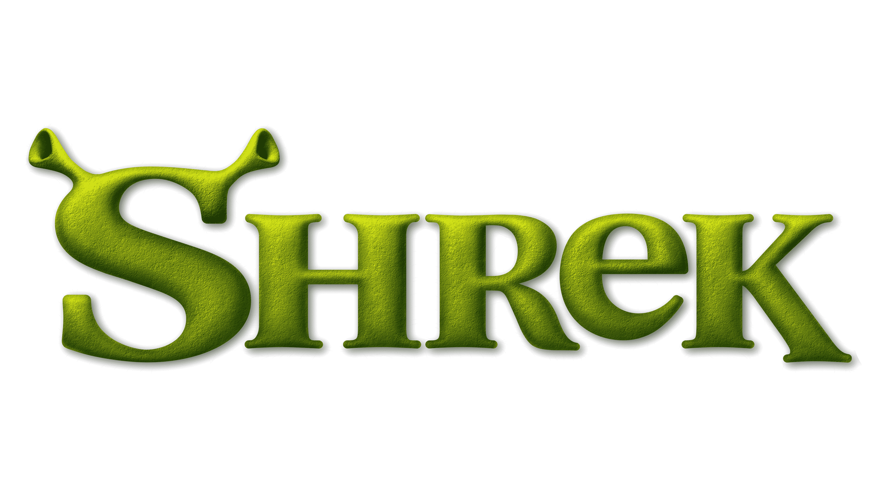

Synopsis Movies Characters
Shrek is an asocial ogre who loves the solitude of his swamp and enjoys fending off mobs and intruders. One day, his life is interrupted after he inadvertently saves a talkative Donkey from some soldiers, prompting Donkey to forcibly stay with him. Donkey is one of many fairy tale creatures that are being exiled by the dwarfish Lord Farquaad of Duloc to beautify his land. However, the creatures inadvertently end up in the swamp. Angered by the intrusion, Shrek resolves to visit Farquaad and demand that he move the creatures elsewhere, reluctantly allowing Donkey to accompany him as he is the only one who knows where Duloc is.
Meanwhile, Farquaad asks a magic mirror if he has the most perfect kingdom; the mirror tells him he is not a king and would need to marry a princess in order to become one. Presented with three options, Farquaad chooses Princess Fiona, who is imprisoned in a castle guarded by a Dragon. Unwilling to rescue Fiona himself, he organizes a tournament, the winner receiving the "privilege" of rescuing her on his behalf. When Farquaad sees Shrek and Donkey in his castle, he announces that whoever kills Shrek will win the tournament; however, Shrek and Donkey defeat Farquaad's knights with relative ease. Amused, Farquaad proclaims Shrek his champion, and agrees to relocate the fairy tale creatures in exchange for Shrek rescuing Fiona. Shrek and Donkey travel to the castle and Dragon attacks them.